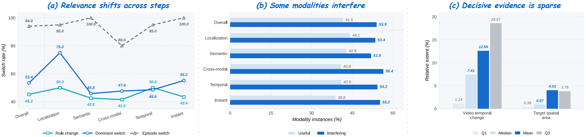
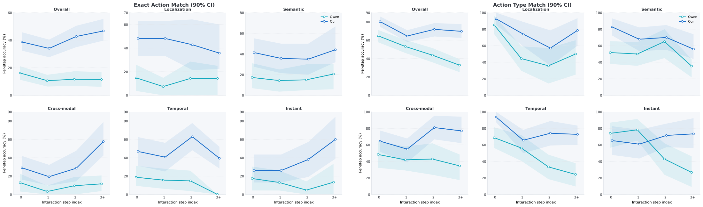
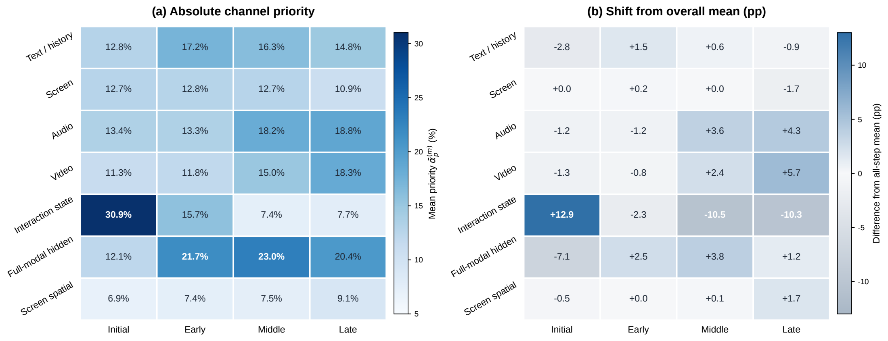
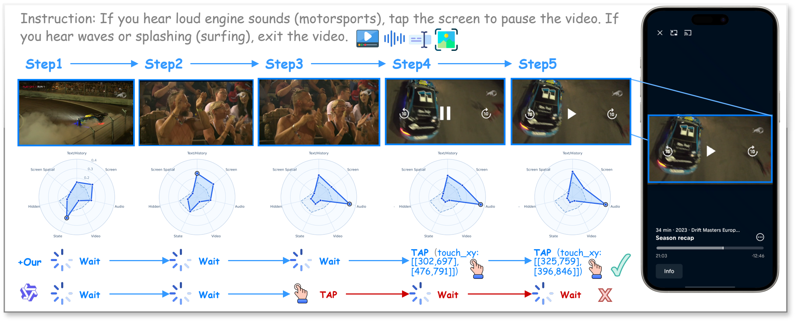
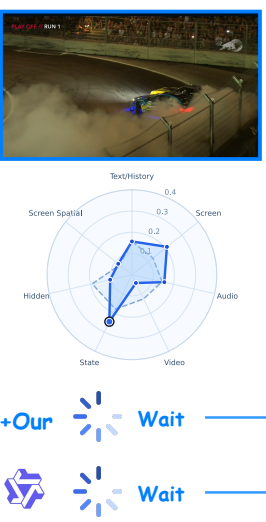

Abstract
Graphical User Interface (GUI) agents increasingly act over streaming omni-modal observations spanning screenshots, audio, video, interaction history, and device states. However, exposing this complete context uniformly at every step ignores that relevance is transient and sparse: the signal determining one action can become clutter at the next. Because executed actions feed back into the context, these errors compound into Sequential Distraction, driving the agent into irreversible trajectory drift. We formulate the underlying requirement as Focused Perception: a representation that is step-adaptive, action-sufficient, and non-intrusive. We realize this in FocusGUI, a lightweight adapter that dynamically prioritizes multimodal channels against a step-specific decision reference. Instead of uniformly processing all inputs, it compresses the most relevant evidence into a compact latent and subtly injects it into the frozen decoder’s embeddings, guiding the model’s attention without altering its native parameter space. FocusGUI trains from action supervision alone, requiring neither modality-relevance labels nor backbone fine-tuning. Across four omni-modal backbones, it raises overall Type Match by +33.2 and Exact Match by 3.0× over the frozen backbone on average, and Type Match by +30.1 over the strongest existing enhancement method.
Why more context is not always better
An agent sees the screen, hears audio, watches video, and remembers earlier actions. But the evidence that determines its next action keeps changing.

Uniformly consuming every signal can turn irrelevant evidence into a wrong action. That action changes the environment and enters the next observation, allowing distraction to accumulate along the trajectory. FocusGUI addresses this Sequential Distraction by adapting evidence priorities to the current decision.
Focused perception, without changing the backbone
A small, trainable adapter guides a frozen omni-modal agent through three principles.
Prioritize the current decision
Score seven evidence channels against a decision reference derived from the current observation. Relevance is recomputed at every action step.
Compress the useful evidence
Aggregate the weighted channels into a compact 64-dimensional latent. Train directly from next-action supervision, without modality-relevance labels.
Preserve the native agent
Add a zero-initialized residual to four existing prompt positions before the action boundary. Keep all original inputs and backbone parameters.
Text/history, screen, audio, video, interaction state, full-modal hidden features, and screen spatial features are mapped to a shared space.
channels → step-specific weights → compact latent
The adapter projects this latent back into the decoder’s embedding space and adds it to existing prompt embeddings.
prompt embeddings + aligned residual → next action
Training setup and evaluation protocol
OmniGUI. 29 applications, 708 episodes, and 2,572 action steps, with episode-disjoint splits.
Optimization. Three epochs with AdamW, learning rate 2 × 10⁻⁴ and weight decay 10⁻³. Only the adapter is trained; the encoders, decoder, and language-model head remain frozen.
Supervision. Next-action token negative log-likelihood. No relevance labels or backbone fine-tuning are required.
Main results
FocusGUI improves four omni-modal backbones across localization, semantic, cross-modal, temporal, and instant-action tasks.
OmniGUI benchmark
Paper Table 1 · all metrics in percent, higher is better
| Method | Type Match ↑ | Exact Match ↑ | Goal Progress ↑ |
|---|
Blue rows indicate FocusGUI. Bold values mark the best score within each backbone. Scores are reproduced from the supplied manuscript.
What makes focused perception work?
Removing any component reduces performance. Adaptive channel selection and residual alignment both matter.
| Qwen2.5-Omni ablation | Type Match ↑ | Exact Match ↑ | Goal Progress ↑ |
|---|
Paper Table 2 · overall evaluation.
Staying focused as the trajectory grows
Focused perception helps prevent the compounding errors that emerge when an agent acts over longer histories.

Different steps, different signals
Interaction-state evidence has the largest weight at the start. As tasks progress, priorities shift toward audio, video, and full-modal hidden features.
This shift is learned through action supervision. There is no fixed modality ranking and no hand-authored schedule.

Case study: listen before acting
A visually similar video can demand different actions. The deciding signal is what the agent hears.

Case 1 · Audio-conditioned video interaction
The right action depends on the sound
Task. If you hear loud engine sounds (motorsports), tap the screen to pause the video. If you hear waves or splashing (surfing), exit the video.
Observe → prioritize evidence → decide → observe again

FocusGUI
Frozen backbone
Paper illustration, not a live agent recording. Radar plots show the channel priorities reported in the manuscript.
BibTeX
@misc{zhang2026focusedomnimodalguiagents,
title = {Focused Omni-Modal GUI Agents},
author = {Fuyao Zhang and Wenwen He and Jiaming Zhang and Yurong Hao and Xuan Wang and Guowei Guan and Che Wang and Longtao Huang and Wei Yang Bryan Lim},
year = {2026},
eprint = {2610.26203},
archivePrefix = {arXiv},
primaryClass = {cs.CV},
url = {https://arxiv.org/abs/2610.26203}
}